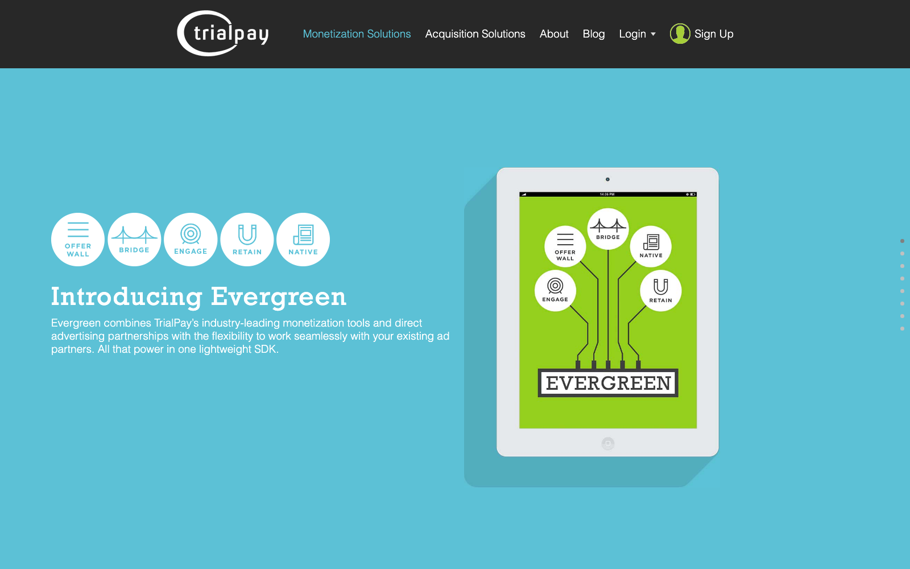

DS Trader
A live, rules-based algorithmic trading engine. Java 21, Dockerized, daily cron, placing real orders across 3+ Interactive Brokers accounts via the TWS API. Running unattended for about five years.

Hands-on Staff Engineer / Tech Lead — I build and operate real production systems, end to end.
Builder-first senior engineer, 20+ years across EDA, mobile, full-stack, and big-data systems — at three startups (co-founder of MoWaiter) and Visa. I take systems end to end — design, build, test, deploy, operate — and lean heavily on LLMs and agentic CLIs to compress the dev loop. I lead engineering teams while staying in the hardest code: unblocking peers through design review, pairing, and prototyping — not headcount planning. Looking for a founding-engineer / staff / hands-on tech-lead seat at an early-stage company, or a small independent team.
Two systems I built and run end to end — integrated as one platform.
A live, rules-based algorithmic trading engine. Java 21, Dockerized, daily cron, placing real orders across 3+ Interactive Brokers accounts via the TWS API. Running unattended for about five years.
A self-hosted Laravel 12 portfolio platform — share-based fund
accounting over bitemporal tables, multi-account funds, multi-tenant
ACL, and an /as_of/{date} time-travel API. ~240 test
files / 2,200+ tests. Quarterly PDF reports auto-delivered to family.

Before Visa: a co-founded company and an exit.
Smartphone dine-in ordering, payment, and waiter messaging (2011–2013). CTO / architect / developer — built the iOS app (Objective-C), the PHP / Symfony2 + MySQL back end, and ran the AWS infrastructure end to end.

Lead / main contributor on Evergreen, TrialPay's 3rd-generation monetization SDK — iOS, Android, and Unity3D — at the offerwall platform acquired by Visa in 2015.

{kind=link}